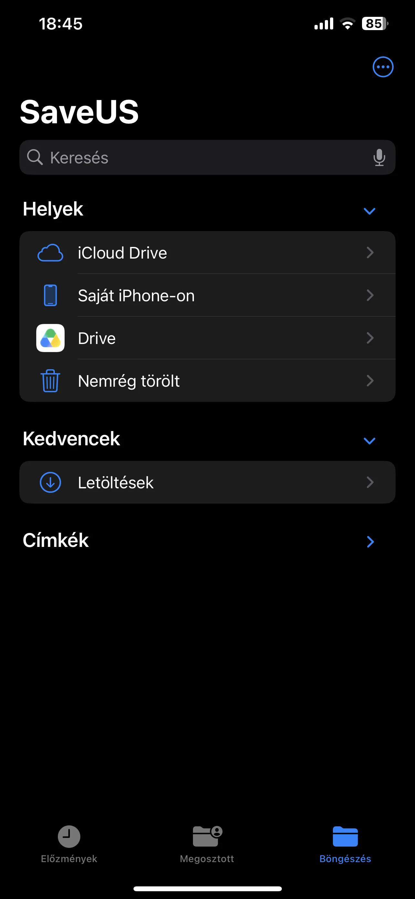

A companion to your Mac · In development
A backup.
In your pocket.
Put the phone you carry to work as a portable backup destination. SaveUs connects the iPhone side of your backup workflow with a macOS application that handles the actual backups.

Your phone, with another useful job
A portable place for your Mac's backups.
SaveUs is designed as a companion to a desktop backup application. The iPhone app gives your phone a role similar to a backup USB drive: a place to carry saved copies of files from your Mac.
The macOS application manages the backup work. Start a backup manually when you need it, or use an automated backup workflow.
The same Mac application can work with other destinations too, so your phone can be one part of a wider backup setup.
Choose where the backup belongs
From your Mac to the right destination.
SaveUs brings manual and automated backups into a workflow with several possible destinations. Choose the location that fits the files you are saving.
- Your iPhone
- Use the iPhone companion as a portable backup destination and keep saved files with you.
- Another computer
- Back up from the Mac application to another computer as part of your backup arrangement.
- A remote NAS or file server
- Send backups to a remote NAS or file server when that is where you want your saved copies to live.
Remember the files. Remember the location.
Know what you saved, and where.
A backup is more useful when you can remember what went into it. SaveUs also keeps a local catalogue of backed-up files, so you can look through the list and identify where a file was saved.
This is the idea behind disk-cataloguing tools: the list stays available as a reference, even when you need to find out which backup destination to return to. You can keep track of the contents without relying on your memory of every backup.
-
Save the files
Use the Mac application's manual or automated workflow to create the backup.
-
Keep the catalogue
Retain a local list of the files that were backed up and their recorded locations.
-
Know where to look
Consult the catalogue when you need to identify the backup that contains a particular file.
SaveUs is currently in development. The screenshot shows a work in progress.